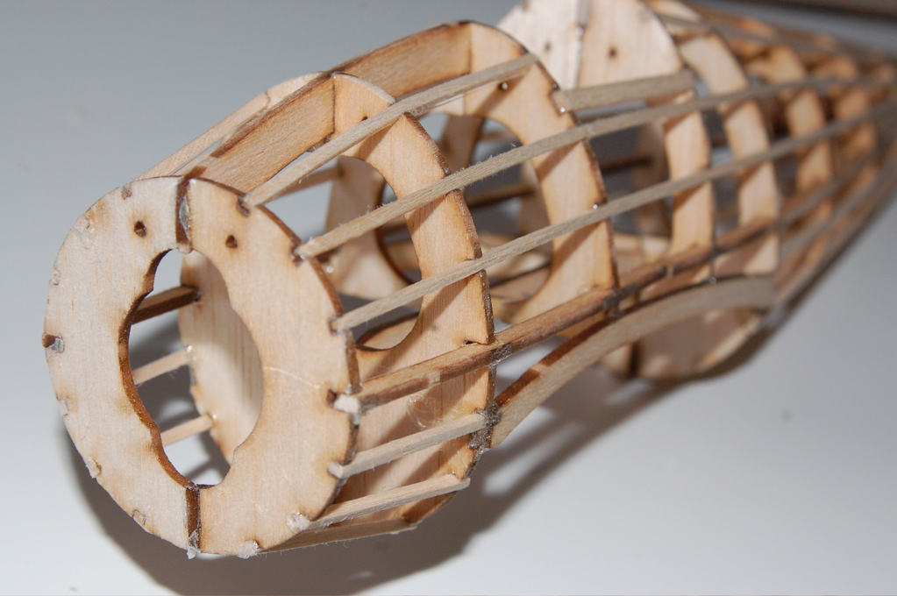

Glue, Balsa, and Patience
2026-04-27
The kit arrives in a box that rattles. Inside: sheets of balsa wood so light they feel like a rumor of timber, a plan printed on paper that crackles, a bundle of strip wood, tissue paper in a color chosen by optimism, and a tube of glue that will shortly be on your fingers, your sleeve, and at least one part of the plan. A balsa model airplane kit is a promise and a warning at the same time. The promise is on the lid, in the photograph of the finished plane sailing over a field. The warning is the parts list. Nothing in this box is in a hurry. If you are, the box will fix that.
Balsa earns its place honestly. It is among the lightest woods in the world — HowStuffWorks and other explainers will tell you it can be a third the weight of pine — which is why a plane built from sticks and paper can fly at all. But lightness has a temperament. Balsa bends where you do not want it to bend, splits along the grain if your knife is dull or your patience is, and soaks up glue like it is being paid to. Working with it is a negotiation. You learn to cut with the grain, to sand with the block flat, to persuade rather than push. Every other hobby material feels argumentative after balsa. Balsa feels like it is listening.
The discipline of drying glue
The true curriculum of the kit is not aerodynamics. It is waiting. A wing is built flat on the plan, rib by rib, each joint pinned and glued, and then — nothing. You wait. You wait for the spar to set before you touch the next rib. You wait for the fuselage sides to cure before you pull them together at the tail, because balsa remembers force and will hold a twist forever if you bully it. Beginners rush this part, and the hobby gently, repeatedly, shows them the cost: a wing that comes off the board warped like a potato chip, a tail that points a few honest degrees away from where the nose is going.
Then, somewhere around the third evening, the waiting changes character. It stops feeling like delay and starts feeling like the actual activity — the way the rise is the actual activity in bread, or the rest is the activity in music. You pin the last rib, you clean the knife, you make tea, and the plane gets stronger without you. Model builders have described this rhythm for a century, and it still reads as slightly radical in a world of instant everything, the sort of slow satisfaction that technology writers at WIRED keep rediscovering whenever they trade a screen for a workbench. The glue dries at glue speed. You are invited to adjust.

Photo: Wikimedia Commons
Tissue, dope, and the fear of the first tear
Covering the frame is the part everyone dreads in advance and loves in memory. The tissue goes on in panels, misted with water so it shrinks drum-tight as it dries, and the first wrinkle feels like a disaster until you learn that wrinkles, mostly, pull themselves out. What you are holding at the end of it is absurd and wonderful: a skeleton you can see through, strong because it is light, light because you resisted adding anything it did not need. Every builder develops opinions here — about tissue versus film, about color schemes visible against a gray sky — and holds them with the serene confidence of someone who has earned an opinion one torn panel at a time.
There is also the small matter of balance. The finished plane must balance on its center of gravity, a point marked on the plan with unusual sternness, and getting there involves the noble science of adding tiny bits of clay to the nose and removing them again. You hold the plane on two fingertips and watch which way it tips, and in that wobble is the entire difference between a flight and a cartwheel. It is physics you can feel in your hands, no equations required — though the equations exist, and some builders cheerfully go looking for them afterward, which is how hobbies smuggle education past our defenses.
The first flight, and what the repairs teach
The first flight should be over long grass, in air as close to still as the evening offers, and it should be short. You launch with a gentle push — not a throw; the plane is not a ball and resents being treated as one — and for three, four, five seconds it does the thing the photograph on the lid promised. It flies. It flies because sticks and tissue and dried glue understood the assignment. Then it lands the way first flights land, which is to say personally, in the grass, with one wing slightly reimagined.
Here is the secret the kit keeps until the end: the repairs are not the price of the hobby. The repairs are the hobby, arriving at its real subject. A cracked rib teaches you how the wing carries load. A loosened joint shows you exactly which glue you hurried. You fix it at the bench that night, slower than you built it the first time, and the plane that goes back over the grass on the weekend is truer than the one that came out of the box's photograph. Measured in minutes, balsa building is inefficient. Measured in evenings — in the particular calm of a person at a bench, pinning a rib, waiting on glue — it may be the best-spent time in the whole house.